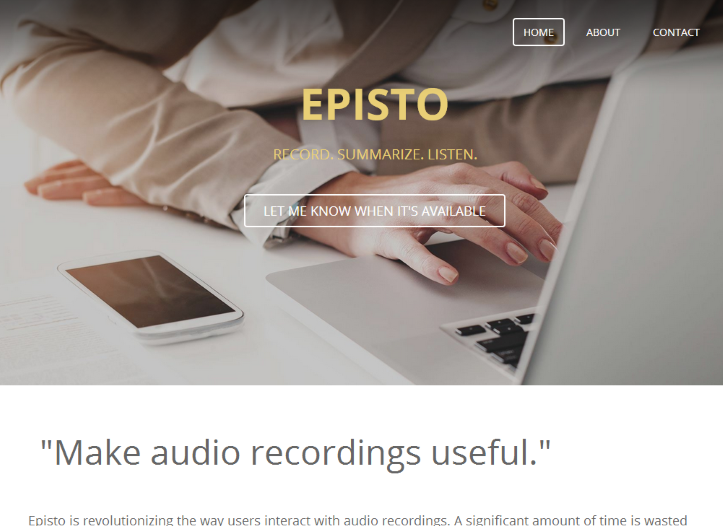

|
Casey Chow |
Sean Duffy |
Episto intends to change the way users interact with audio recordings. Instead of wasting time scrubbing through a recording for the parts that matter, using Episto, important information is extracted and pinpointed, allowing the user to reference meetings much more effectively.
Episto is the natural next step for virtual assistants. This application of technology could allow virtual assistants to act on their own without inalienating the user. At the same time, virtual assistants can take a greater role in the user's lifestyle, prioritizing information for them in a clear and reliable manner.
The user will:
This week, we defined the scope, intent, and roadmap of the project.
We determined the coding platform of the application.
We researched the WebRTC APIs (used for audio recording and possibly streaming) as well as common patterns and designs developed around the technology.
Code is available at https://github.com/digitxp/episto.
We began creating a website for the project.
Temporary URL: http://episto.weebly.com/
We established a couple of working patterns for recording and streaming audio from the browser.
Recording |
Transmission |
Modularity |
We completed Proofs of Concept 2 and 3, which allow for continuous upload of files.
Proof of Concept 3 allowed for approximately 14 submissions per second, with a consistent latency of about 10 ms on a loopback device.
PoC 3 uses the createScriptProcessor function in the WebAudio API to pull
raw sampling data from the microphone.
This sampling data is encoded into a base64-encoded WAV file in Javascript and uploaded using socket.io.
We began working on the frontend interface for the application, as well as another splash page.